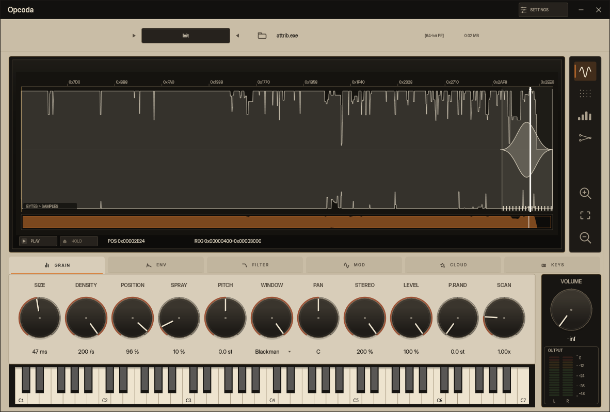

O Opcoda lê executáveis do Windows (arquivos PE), corta os bytes em grãos e usa isso como fonte de som. A tela mostra o binário, a forma de onda e os controles de grão, envelope, filtro e modulação.
É databending em formato de plugin. Versão 0.1.0, Windows x64.
- formato
- VST3 + standalone
- plataforma
- Windows x64
- stack
- C++20 · JUCE 8
- versão
- 0.1.0